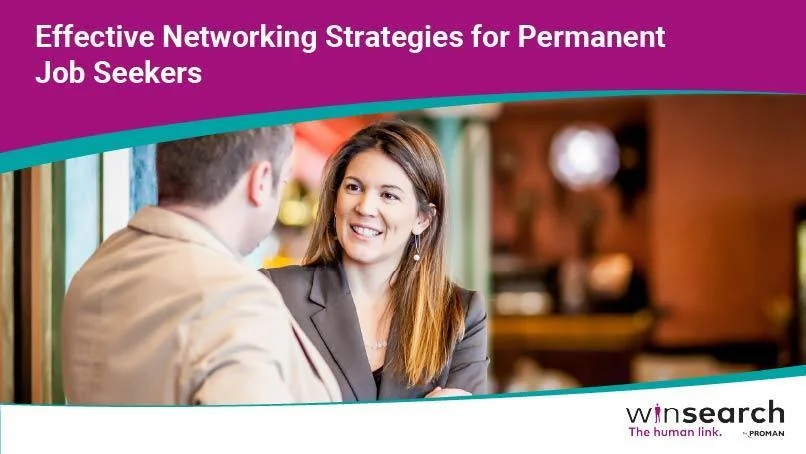

With over 1 billion members on LinkedIn, standing out to recruiters isn't accidental — it's strategic. Every week, recruiters run hundreds of targeted searches to find candidates just like you. The question is: does your profile appear in those searches? And when it does, does it make them want to reach out?
This guide walks you through every section of your LinkedIn profile with actionable, specific advice to dramatically increase your recruiter visibility, engagement, and ultimately, interview invitations.
Why LinkedIn Profile Optimization Matters
Before diving into tactics, understand the stakes. LinkedIn reports that members with complete profiles are 40 times more likely to receive opportunities. Recruiters use LinkedIn's advanced search filters to find candidates by keywords, location, industry, job title, and skills. If your profile is missing these signals, you're invisible.
More importantly, when a recruiter lands on your profile, you have roughly 6 seconds to make an impression before they scroll past. Your profile isn't just a resume — it's a personal brand story that either compels them to reach out or doesn't.
1. Your Profile Photo: The First 0.1 Seconds
LinkedIn data shows that profiles with photos receive 21 times more views and 9 times more connection requests. Your photo isn't just a formality — it's doing real work.
What makes a great LinkedIn photo:
- Professional but approachable — no suits required, but no beach photos either
- Good lighting: natural light or a ring light, facing toward the light source
- Your face should fill 60% of the frame
- Neutral or plain background — avoid cluttered offices or distracting backgrounds
- Current — taken within the last 2-3 years
- Smiling — warmth increases perceived trustworthiness
2. The Headline: Your Most Powerful 220 Characters
Most people waste their headline by writing just their current job title: "Marketing Manager at ABC Corp." That's a missed opportunity. Your headline appears everywhere on LinkedIn — in search results, comments, connection requests, and messages. It needs to instantly communicate your value.
Headline formula that works:
[Your Role] | [Key Skill or Speciality] | [Value You Deliver or Industry]
Before: Marketing Manager at ABC Corp
After: B2B Marketing Manager | Demand Generation & ABM Specialist | Helping SaaS Companies Scale Pipeline 3x
Pack your headline with keywords recruiters actually search for. Think about what someone would type into LinkedIn search to find someone like you — and put those exact words in your headline.
3. The About Section: Your 2,600-Character Pitch
The About section is where most profiles fall flat with generic filler like "Results-driven professional with a passion for excellence." Recruiters skim past these instantly. Instead, write like a human being telling their professional story.
Structure your About section like this:
- Hook (2 sentences): Start with something compelling about your career focus or a bold professional statement
- What you do (3-4 sentences): Describe your expertise, who you help, and how
- Achievements (2-3 bullet points): Quantified results — numbers make you memorable
- What you're looking for: Be explicit about the types of roles, industries, or challenges that excite you
- Call to action: Invite people to connect, message, or visit your portfolio
4. Experience Section: Achievements, Not Responsibilities
The single biggest mistake in LinkedIn experience sections is listing job duties instead of accomplishments. Recruiters don't need to know what your role was supposed to do — they want to know what YOU actually achieved.
Transform each bullet point using this formula:
Action verb + What you did + Measurable result
Weak: "Responsible for managing social media accounts"
Strong: "Grew Instagram engagement 340% in 6 months by implementing a data-driven content calendar, resulting in 12,000 new followers and a 28% increase in website traffic"
For each role, aim for 3-5 bullet points that follow this formula. If you don't have exact numbers, use estimates or relative comparisons ("reduced processing time by approximately half").

5. Skills Section: The SEO of LinkedIn
LinkedIn allows up to 50 skills. Use all of them. Skills are heavily weighted in LinkedIn's search algorithm — profiles with 5+ skills are 17x more likely to be discovered by recruiters.
Strategy for skills:
- Prioritize your top 3 skills (they display prominently) — choose the ones most relevant to your target roles
- Mix hard skills (specific tools, technologies, methodologies) with soft skills (leadership, communication)
- Look at 10 job descriptions for roles you want and add every skill keyword that appears repeatedly
- Get endorsements — profiles with endorsements rank higher in skill-based searches
6. Recommendations: Social Proof That Converts
Written recommendations are among the most powerful trust signals on LinkedIn. They take what you claim about yourself and validate it from someone else's perspective. Aim for at least 3 recommendations — ideally from managers, senior colleagues, and clients.
How to get more recommendations:
- Make it easy — write a draft they can edit rather than asking from scratch
- Be specific about what you'd like them to mention (a specific project, skill, or quality)
- Reciprocate — write them one first
- Reach out to former colleagues you worked closely with in the past 5 years
7. Activity and Engagement: The Overlooked Ranking Factor
LinkedIn's algorithm rewards active users with higher search visibility. Profiles that post, comment, and engage regularly appear more frequently in recruiter searches — even for the same keywords as less active profiles.
Simple activity strategy:
- Post 1-2 times per week — industry insights, career lessons, or professional achievements
- Comment meaningfully on posts from industry leaders (not just "Great post!")
- Share relevant articles with a 2-3 sentence personal take
- Engage with your connections' content — congratulate promotions, like milestones
8. The Open to Work Feature: Should You Use It?
LinkedIn's "Open to Work" green banner is visible to all members. It signals availability clearly but some candidates worry it may signal desperation to current employers. Here's what the data actually says:
- Profiles with "Open to Work" receive 2x more InMail messages from recruiters
- You can enable it for recruiters only (invisible to non-recruiters and your current employer's LinkedIn page)
- For active job seekers, the benefit almost always outweighs any perceived downside
9. Vanity URL and Contact Information
These two small details are often overlooked but matter more than you'd think.
Customize your LinkedIn URL from the default string of numbers (e.g., linkedin.com/in/john-smith-38471923) to something clean (e.g., linkedin.com/in/johnsmith). This looks more professional on resumes and business cards.
Make sure your contact information is complete and current: email address, phone number (optional), and website or portfolio link. Many recruiters want to reach you outside LinkedIn — make it easy.
Your LinkedIn Optimization Checklist
- ✅ Professional, current headshot (face fills 60% of frame)
- ✅ Keyword-rich headline (not just your job title)
- ✅ Compelling About section with hook, story, achievements, and CTA
- ✅ Experience bullets are achievement-focused with numbers
- ✅ 50 skills listed, top 3 aligned to target roles
- ✅ At least 3 written recommendations
- ✅ 500+ connections (improves search ranking)
- ✅ "Open to Work" enabled for recruiters
- ✅ Custom vanity URL
- ✅ Posting or engaging at least weekly
Your LinkedIn profile is never truly finished — it should evolve with your career. Revisit it every 3-6 months, update your achievements, add new skills, and keep your headline aligned with the roles you're targeting. The candidates who get the most recruiter attention aren't always the most qualified — they're the most visible and most compelling.
Ready to Take Your Career to the Next Level?
At Talent Loop, we connect exceptional candidates with outstanding opportunities. Our comprehensive career assessment matches your skills and goals with positions where you'll truly thrive.
Take Our Free Career Assessment